Part 1
Casteljau's algorithm involves linearly interpolating between the points to get intermediate points repeatedly until we get one point on the Bezier curve. We then repeat with t from 0 to 1 to get the full curve. In my implementation I simply interpolate between consecutive points to get n-1 points and return the resulting array.
in order: step 1, step 2, step 3, step 4, step 5, slightly different curve
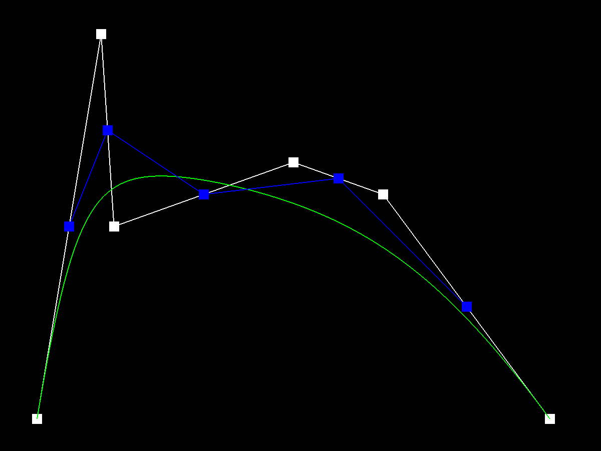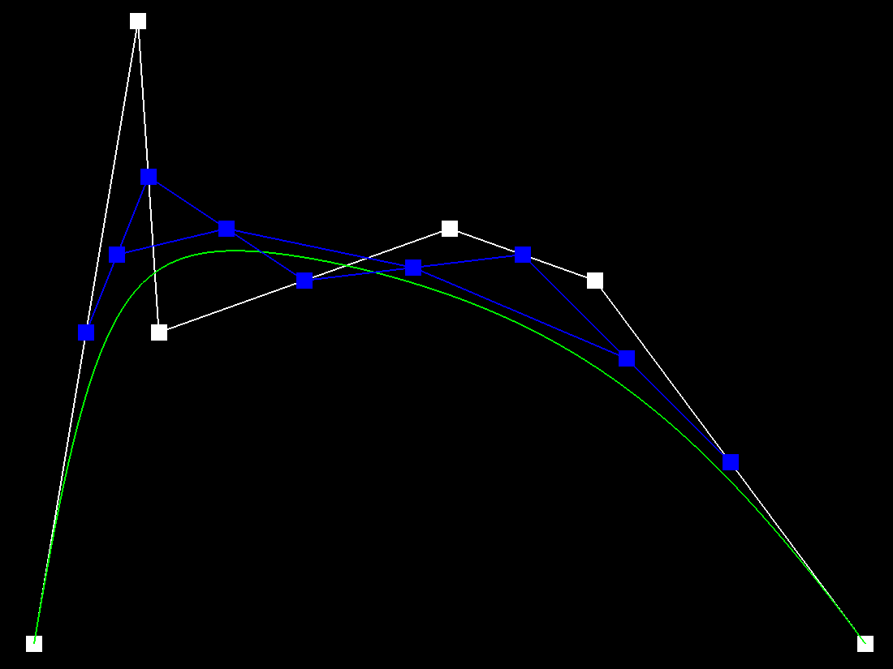
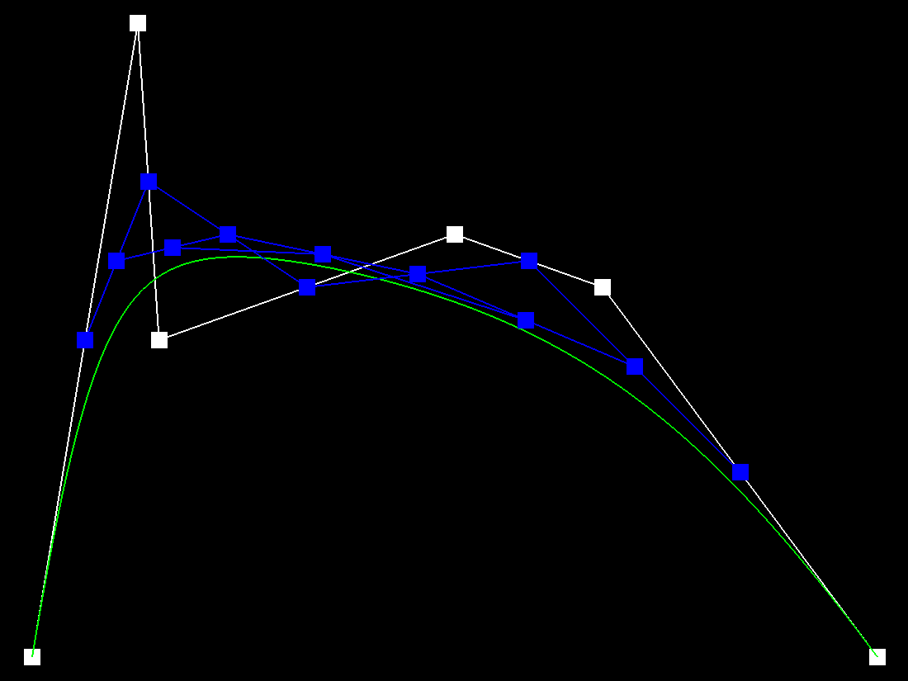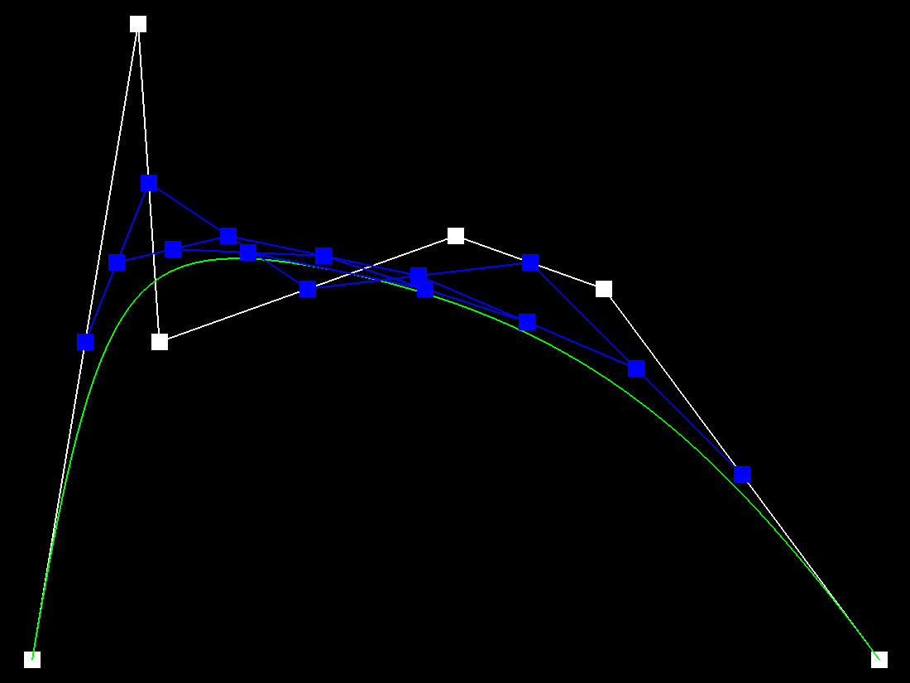
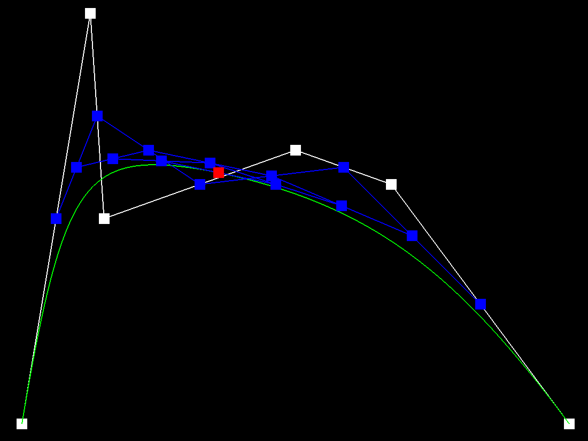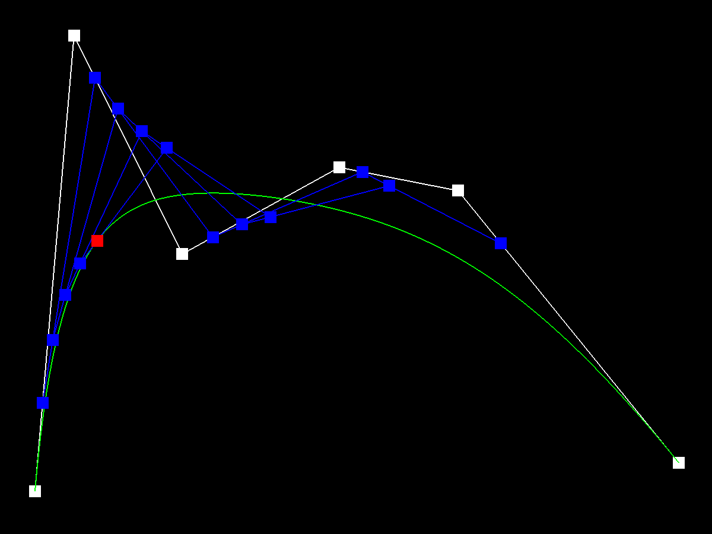
Part 2
The surface algorithm is very similar to the version for curves. We essentially generate a set of intermediate points (one along each row of our grid of control points) by using the same process as the curve algorithm. We can then apply the curve algorithm to this column of intermediate points to get our final point. The rows are parameterized by u and columns by v instead of the single parameter t from the curve algorithm.
My implementation for evaluateStep was the same as for the curve (interpolate consecutive points). evaluate1D was just repeating evaluateStep until there was a single point. The evaluate function first generates the intermediate points for each row using evaluate1D, then calls evaluate1D one final time on this column of points.
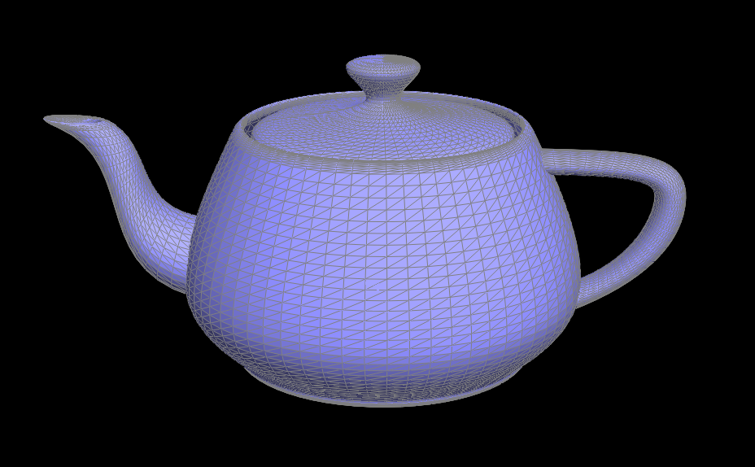
Part 3
I computed the area-weighted normals for each face by first getting the vertex position for the current halfedge, for the next halfedge, and for the next next halfedge. This gives me all 3 vertex positions for the current face. I can then take the cross product of the p2 - p1 and p3 - p1 vectors to get the area-weighted normal for the current face. Then, I looped over all the faces (similarly to printNeighbourPositions) and summed and normalized the normals for each face to get the final result.
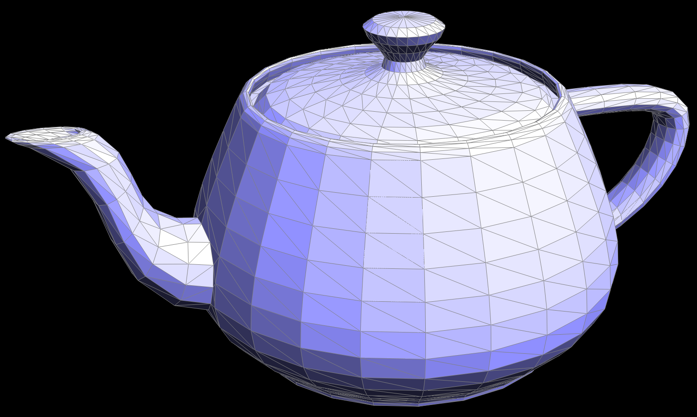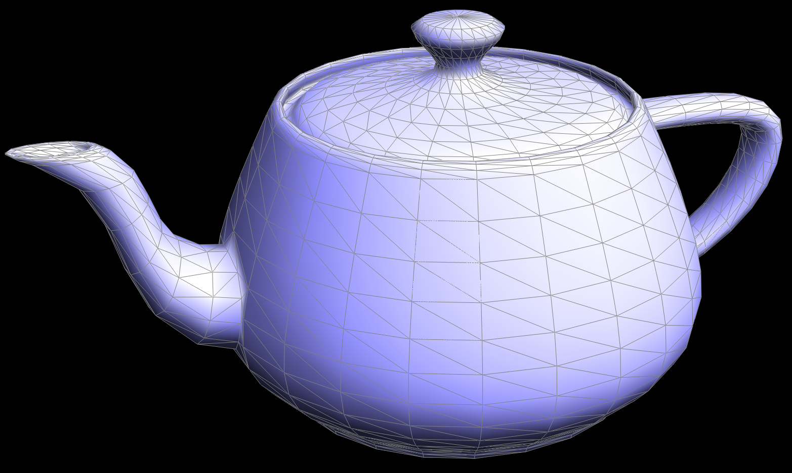
Part 4
I drew out two diagrams for before and after the flip and labeled the vertices (a, b, c, d), edges (e1-e4), half-edges (h1-h6), and faces (f1, f2). I used these diagrams to figure out all the pointer changes (which half-edge each vertex/edge/face should point to and all the pointers for half-edges). I was then able to just make these pointer changes in the code. There were no interesting tricks I used because this function worked immediately. There was no debugging necessary.
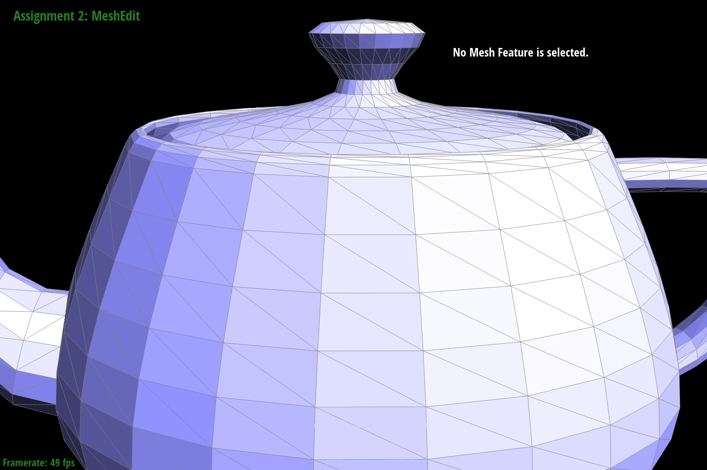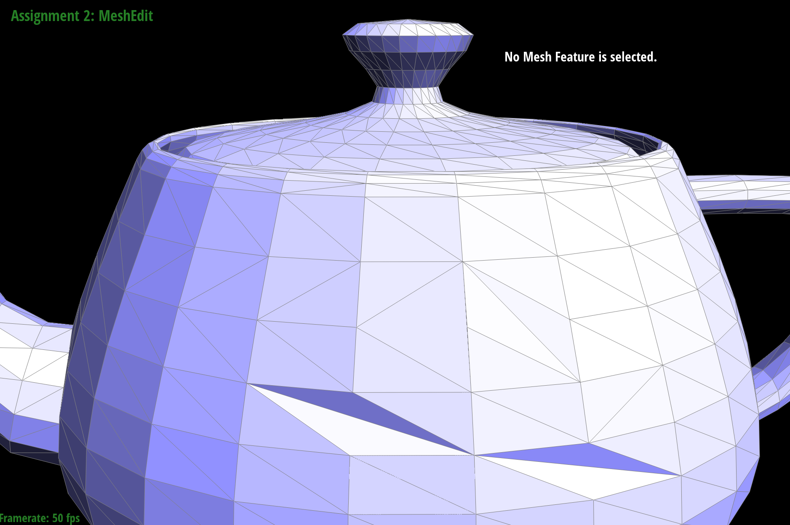